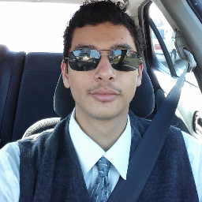

Hello, my name is Paul Gonzalez-Becerra. I am a student at
College of the Sequoias, studying under Computer Science.
I might not have much professional experience in computer programming, but I have roughly
7+ years in self-taught experience and about 2 years of academic experience in computer
programming. I currently understand C#, C++, Java, and JavaScript for computer languages,
but I am a quick learner so I am capable of learning more languages and tricks. Anything in
my Projects & Portfolio page with John Redden, is an
academic project. I have also been working on a small game engine for about 1-2 years, started
with OpenGL but I moved it to DirectX. Which I started off of
this book. My ultimate goal is be become a Game Developer, but anything pertaining to
computer programming is still a step towards that goal.
Best way to contact me is by e-mail: pgonzbecer@gmail.com; I do check is daily at a constant rate.
Best way to contact me is by e-mail: pgonzbecer@gmail.com; I do check is daily at a constant rate.